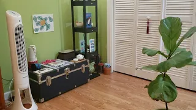
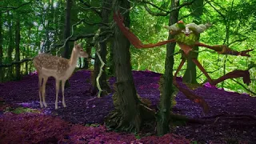
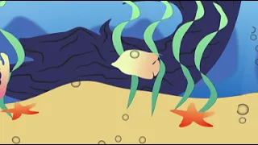
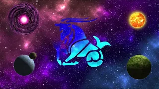

Digital Art Portfolio
These are some projects that I've completed throughout my Digital Media class at Penn State Behrend.
- Project 1: Video Editing In this project, I used Adobe Premiere Pro to edit video and audio clips to create a cohesive video.
- Project 2: After Effects Project 2 involved using Adobe Photoshop and After Effects to explore various editing techniques.
- Project 3: 3D World Building This project required the use of Adobe Photoshop, Illustrator, and After Effects to create a 3D world where people can look around.
- Project 4: Multi-Media Project Project 4 involved the use of Adobe Photoshop, After Effects, and Premiere Pro to showcase various visual and auditory editing techniques to create a creative, complex space environment.